TexTools for Blender |
TexTools for 3dsMax |
TexTools is a Free addon for Blender 3D with a set of professional UV and Texture tools. Back in 2009 I released the Original TexTools for 3dsMax. There are 3 panels in TexTools: UV Layout, Texture Baking and ID Colors.
Download
What's new in 0.9.5
- Color ID tools
- UV normal Smoothing
- Peel Edge unwrapping
- Bake mode: Diffuse
- Bake mode: Face selection
- Bake mode: object normal
- Rectify
- 2x Checker map styles
- 7x Color ID templates
- Color Elements
- Export & Import Color IDs
Requirements
Blender 2.79 for Windows, Mac or Linux
Installation
- Open User Preferences
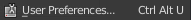 - Select the Add-ons tab

- Press Install Addon and Select the zip file
- Enable the TexTools Addon 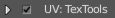
- TexTools is in the tool panel of the UV/Image Editor 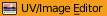
Size Panel
Size & Padding
Set the texture size in pixels for baking and checker maps. Use the dropdown menu to quickly assign common texture sizes.
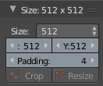
Pressing the eyedropper button will get the texture size from the selected object. Padding is used for UV margins and texture baking.
Tip: Hold down Ctrl + scroll Mouse Wheel to quickly cycle through the sizes.
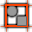 Crop
Crop the UV area to the bounds of selected UV faces. Additional padding will be added to borders.
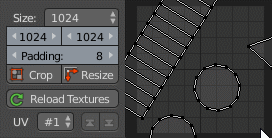
 Resize
Resize
Opens a resize popup where you can extend or resize the UV layout canvas to either direction. Rather than scaling it will extend the UV area size while mainting the UV proportions.
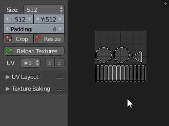
Note: The active background image in the UV/Image Editor will be resized to force a correct aspect ratio in the UV view. If no active background image is active a new one will be generated.
UV Channel
Cycle through existing UV channel via this dropdown menu. If no UV map exists a button to Add one will appear instead.

The up and down arrow allow you to swap UV channels up or down.
 Reload Textures
Reload Textures
Reload all textures in the current blend file and removes unsued ones.
Note: Blender only fully removes unused items the next time you open the file, press Ctrl + Shift + O to quickly re-open your blend file and clear unsused items.
UV Layout Panel
These UV layout tools are used to unwrap or transform your UV layout.
 Align Edge
Align Edge
Aligns the UV island of the selected UV edge 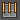 to the closest 90 degree angle.
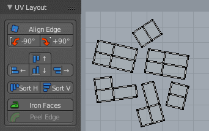
Tip: You can align mutliple UV islands by edge at once.
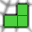 Rectify
Align selected UVfaces 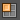 or UV verts  to rectangular distribution. Rectify is currently based on UVSquares by Reslav Hollos.
to rectangular distribution. Rectify is currently based on UVSquares by Reslav Hollos.
 Rotate 90°
Rotate 90°
Rotates the associated UV island 90 degrees left or right and aligns the island to the initial bounding box's top left or right.
 Align
Align
This tool has 4 directions to align UV islands or UV vertices to.
In UV vertex mode Vert mode it Aligns selected UV verts to either side of the initial selection bounds.
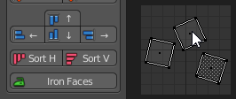
In the UV face mode selected UV islands are aligned to either side of the initial selection bounds.
 Sort & Align
Sort & Align
Sorts the selected UV islands by longest side and aligns them vertically or horizontally in a row.
Iron Faces
Unwraps selected viewport faces Face 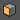 mode into a single UV island. This approach can be quicker than marking edges for UV seams before unwrapping.
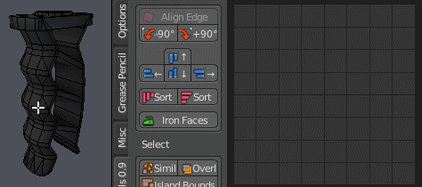
Peel Edge
Select an edge  or edge loop and unwrap linked geometry to a rectified UV island.
or edge loop and unwrap linked geometry to a rectified UV island.
Note: Works best with pipe shapes
Selection Tools
Select Similar
Selects similar UV islands based on the UV island input selection and matching UV Island topology.
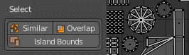
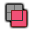 Select Overlap
Collects all UV islands that overlap each other and select of each group all UV faces except for one island.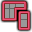 Select Island Bounds
Selects the edge bounds of all UV Islands in the 3D view.
Mesh Tools
 UV Smoothing
UV Smoothing
Applies smoothing normals to the object except at the UV island edge bounds.This is often used for normal map baking so that the edges of UV islands bake nice.
Texel Density Tools
Texel Densities are used to apply the same size of pixels in 3D (texel) to the surface of your objects or selected faces.
Checker Map
Assigns a checker map texture (blender render) or material (cycles) to the objects. The assigned checker map matches the width and height of the size inspector. When a checker map is assigned it changes the view to texture mode.
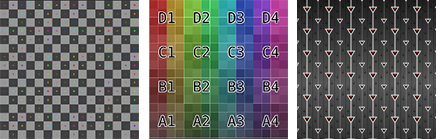
Tip: Assign a checker map again and the checker map will change from UV Grid to Color Grid
 Texel Density
Texel Density
Texel density is a value that describes how many pixels from a texture are visible per 1 unit or 1 meter.
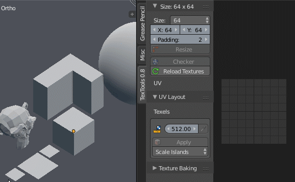
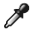 Get Density
Calculates the Texel density of the selected objects or UV faces when in UV editor mode.
| 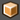 Objects | Samples the texel density of all selected Objects. |
| Selected Faces | Samples the texel density of selected faces. |
Apply Density
Applies the Texel Density to the selected Objects or mesh faces by scaling the UV's.
| Objects | Applies the texel density to the selected objects and all of their faces. |
| Selected Faces | Applies the texel density to selected mesh faces |
Select from the dropdown menu from 2 modes of scaling the UV's:
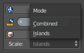
| Combined | Scales the entire UV set to the top left corner as a whole. |
| Islands | UV's are scaled individually by each UV island at its center. |
Texture Baking Panel
To bake textures in TexTools just select your objects and press Bake. High low poly and cageobject pairs are detected via object names. You can bake just with a single objects, high poly to low poly or in addition that with a custom cage object.
 Bake
Bake
Bakes the current texture type with the current selected object set. Baked images will appear in UV/Image Editor .
Note: Baked textures are not saved but require to be saved manually (F3 key in Image/UV editor)
Bake Mode
Press the big thumnail button to change the current bake mode. Additional parameters are listed below the bake mode thumbnail.
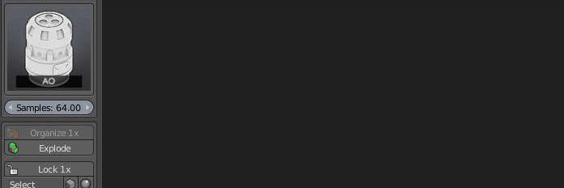
 AA / Anti Alias
AA / Anti Alias
Anti Aliasing level, choose from: None, 2x and 4x. When you enable Anti Aliasing the bake render is rendered at a scaled resulution and afterwards down scaled. Anti Aliasing works on any baking mode.
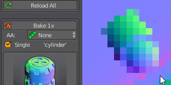
Single
Bakes selected objects into a single texture as opposed to one texture per set. It uses the name or ID from the first item in the baked image name.
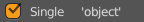
This options is useful for multi part objects that belong to the same texture.
Bake Types
Tangent Normal
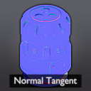
A normal map in tangent space.
Object Normal

A normal map in object space.
Tip: Use this map for vertical gradients.
Diffuse

Renders the diffuse colors of all Cycles materials of the object.
Tip: Color ID setups are baked in this 'Diffuse' mode.
Selection

Renders your current mesh face selection as a black and white mask.
ID Element

Assigns a unique color to each mesh element.
AO

An Ambient Occlusion bake in Cycles.
Parameters: Samples
Cavity

Assigns dirty vertex colors (convexity) to the source mesh and combines it with a 'pointiness' cycles render node.
Dust

Dust is similar to the cavity map but adds additional Z top normals to the mix.
Tip: Use this mask for dust and dirt masks in your texturing process.
Bake Sets
A bake set is a set of objects that are used together to bake a texture or part of a texture. TexTools groups your scene selection into bake sets. Objects with a common name are grouped into a set, keywords are used to differenciate between specific object types such as highpoly, floating geometry or cage objects.
Bake Sets List
This area displays the selected bake sets. Each bake set can contain 4 different type of objects. They are
Low poly objects: when their name contains. Keywords: lowpoly, low, lp or l |
|
| High poly objects: when they contain a Subdevision Surface modifier or when their name. Keywords: highpoly, high, hp or h Name example: scope_h or scope.hp |
|
| Floating geometry: Floating geometry is rendered in a seperate pass and overlayed on the rest. This allows to render AO without casting shadows. Keywords: floater, float or f Name example: scope_float |
|
| Cages are used to project rays from a custom mesh, this match needs to match the face and vertex count of the low poly object.. Keywords: cage or c Name example: scope_c |
Tip: Expand the tool panel width to see the amount of objects for each type.
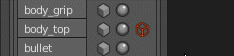
Lock Selection
Lock or unlock the current bake selection. When locked scene selection changes won't affect the baking list. This is great for tweaking meshes, cages or other settings while baking.
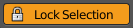
Select by type
Select from the baking sets all objects that match a critera such as Warning, Low, High or Cage objects.
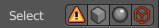
Tip: When bake sets are locked you can select scene objects here independently of the bake sets.
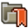 Organize
Matches selected high and low poly objects by their bounding box location and size. Matched high poly objects are renamed to match their low poly pairs.
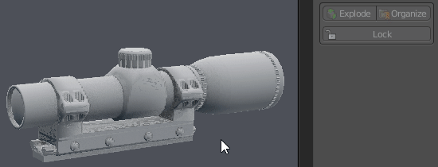
Only high poly objects are renamed to match the low poly names with the ' high' suffix at the end.
Example: 'scope' and 'scope high'
Explode
Moves all selected bake pairs apart into 6 directions. Offsets are based on bounding boxes and offset to the center of the whole group. Margins are a 35% of the average side of all bounding boxes.
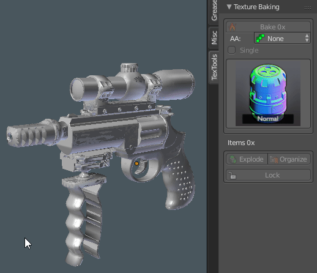
Animation keyframes are added at 0 and 50 of each selected object to transition between the 2 states. Keyframes can be removed aftwards if not desired.
Color ID Panel
Color ID's are a quick way to block out your model with a set of colors or face groups. Colors are global accross your blend file and can be adjusted at any time.
Tip: For baking use the Diffuse bake mode and setup the materials in the Cycles render mode.
Color templates
Choose from a collection of color themes. Once selected this will replace your previous colors but maintain your material ID's.
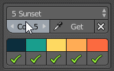
Tip: Hold down Ctrl and scroll the mouse wheel while hovering the dropdown UI element to quickly cycle between the values.
Colors
The amount of colors to display and use. Choose between 2 and 15.
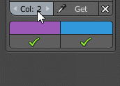
Clear
Clears the multi material setup of the selected objects and materials from the scene.
Export & Import
Exports or Imports current colors as hex strings to your clipboard. Hex colors need to be comma seperated and use a #RRGGBB format
Tip: Use the Color Highlight extension with Visual Studio Code to preview your colors in a text editor.
Color Controls
The main interface to assign and select colors on selected objects or faces in edit mode.
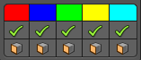
| 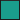 Color | Change the global color for this swatch. You can change colors before or after you assigned them. |
| Assign | Assigns the color to the selected Objects in object mode or selected faces in edit mode. |
| Select | Only in edit mode: Select faces by color. |
Tip: You can hover over color swatches in blender and press Ctrl + C and Ctrl + V to copy and paste within Blender.
 Color Elements
Color Elements
Automatically assign colors to unique mesh elements.
Developer Notes
Using GIT source version in Blender
Quite often the latest GIT source code version is not very stable. To run the GIT version I recommend setting up the 'Scripts' path in the user preferences to point to the GIT folder.
- Goto user preferences (Ctrl + Alt + U)
- In the 'File' tab set the 'Scripts' path to '{GIT Path}\' so that blender will pick up 'addons' folder
- In the 'Add-ons' tab enable TexTools
Debug mode
By default the public releases and the GIT source version hide development tools in the UI. To reveal them you have to set the debug panel value to other than '0'
- Press Ctrl + Alt + D for the debug value panel
- Set the value other than '0'
- Protoype tools should be shown in red in the interface
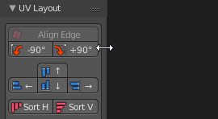
Additional tools should now be highlighted in red inside the interface.
Code Structure
Each operator for the tools has it's own python module file. Should you want to inspect or change the code this should make it easy to look for the right code. All code is commented fairly thorough and to my best ability simplified.
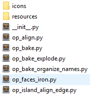
Materials used for baking are stored in the resources folder as *.blend file.
Icons are stored in the 'icons' folder and reflect the operator python module names.
Release Log
Having issues with the latest version? Try an older version from the list below:
TexTools 0.9.5.zip TexTools 0.9.0.zip TexTools 0.8.0.zip TexTools 0.7.2.zip TexTools 0.7.1.zip TexTools 0.7.0.zip TexTools 0.6.0.zip TexTools 0.3.0.zip| 2018 render|hjs | @renderhjs |